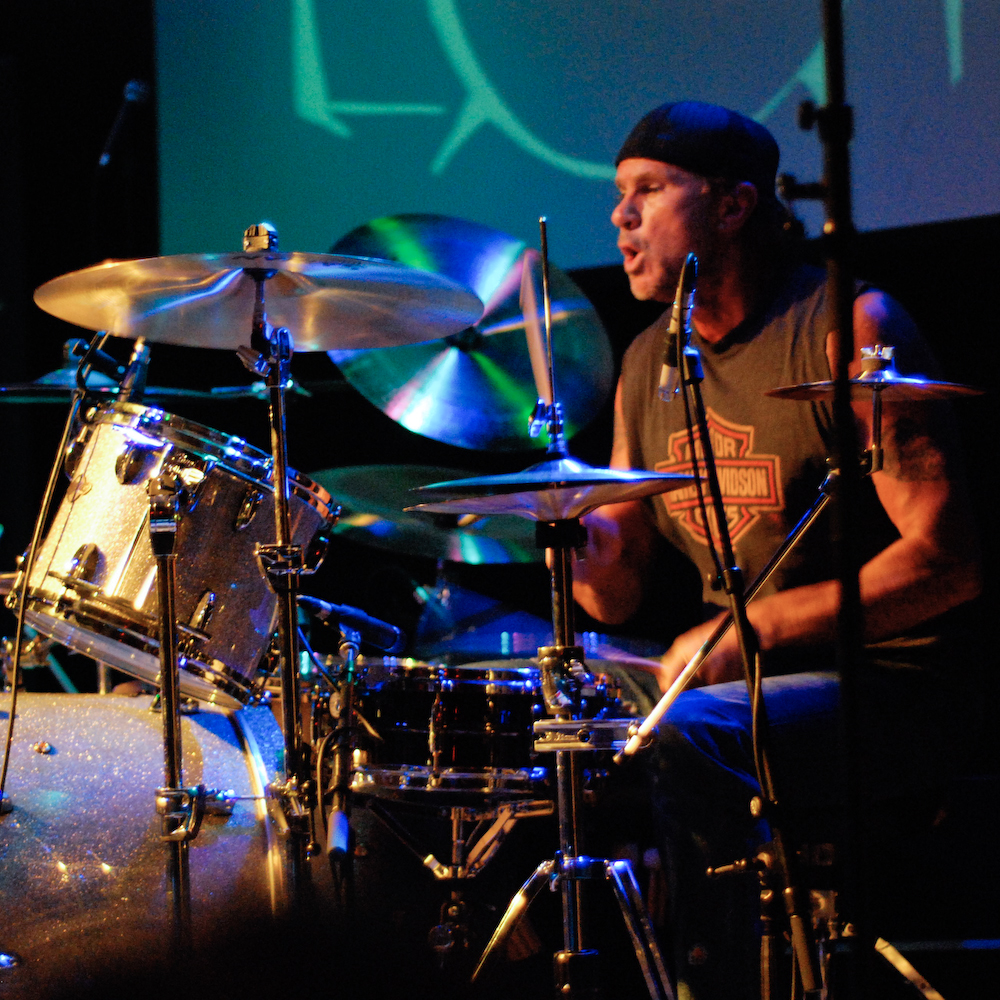

Neil Peart
Neil Peart is one of the most universally respected rock drummers, and is best known for his nearly superhuman, pyrotechnic drum playing, and for providing intellectual lyrics for his band's songs. Neil has served as both drummer and lyricist for the rock band Rush since 1974, joining bassist/vocalist Geddy Lee and guitarist Alex Lifeson. (Rush's lineup has remained unchanged since Neil's arrival in 1974.) Rush is the most successful Canadian music group in history, and is the third most prolific seller of consecutive (American) Gold and Platinum Records and videos, behind only The Beatles and The Rolling Stones.
Beginning on August 10, 1997, immediately following Rush's "Test For Echo" tour, Neil Peart endured concurrent, seemingly unendurable tragedies when his daughter (and only child) died in a car accident, and his wife died from cancer 10 months later. This put Rush on indefinite hiatus for the first time, and prompted Neil to write "Ghost Rider: Travels on the Healing Road", his second book. In September 2000, Neil married Los Angeles photographer Carrie Nuttall. Following Neil's recovery, Rush returned victoriously to the studio and the stage in 2002 with "Vapor Trails", their 17th studio album.
Chad Smith
 Chad Gaylord Smith was born in St Paul, Minnesota on October 25th 1961. He later moved to Michigan, where, whilst he was still at school, ran away from home for a period of time. When he returned with a dog called Bong, his mother sent him to a boarding school, kept the dog and shortened his name to Bo. He worked at various jobs, including Gap, but having played the drums since a very young age, he played in various bands in Michigan, one being called Toby Redd. In his twenties, he moved to California, where his brother Brad lived, and ended up in Los Angeles, where he auditioned for the Red Hot Chili Peppers, following the departure of DH Peligro. He got the job, and is still there today. He married his first wife, Maria, an artist, in 1996, and they divorced the following year, after the birth of their daughter, Manon St John Smith. In 1998, his son Justin was born, and two years later, his daughter Ava was born. In May 2004, he married an architect, Nancy Mack, with whom he has a baby son, Cole. He has worked with numerous musicians away from the Red Hot Chili Peppers, including Dave Navarro, Glenn Hughes, Wu Tang Clan and John Frusciante. He has recorded five albums with the Red Hot Chili Peppers, and is currently working on his sixth (the band's ninth) studio album with the band. He is currently on tour for Stadium Arcadium, and will be playing the Carling Festival with the Red Hot Chili Peppers this August.
Travis Barker
Not everyone with the drum sticks in the hands can boast of playing the instrument like Travis Barker! Recognized as ‘Punk's first superstar drummer’ by Rolling Stone magazine, he is the immaculate drumming star of the era, who reaffirmed the status of the music of the drums. A prodigious child, Barker’s association with the drums has been since he was four-years-old. As time passed, he only mastered the art and polished his skills to become at par with the world’s best drummers. Barker’s first outing as a drummer was for Feeble, a school band. The split of Feeble led him to explore more options. Eventually he found a place with The Aquabats. His career took a major turn when a chance inclusion as filler for Rayne in the band, Blink-182 proved to be the momentous occasion as he was soon roped in by the band. Record after record, the band gained much popularity as their songs became hit chartbusters. Apart from his association with the band, Barker has been a frequent performer and collaborator with hip-hop artists, the alternative rock band ‘+44’, the rap rock group ‘The Transplants’, and the alternative rock band ‘Box Car Racer’. In 2011, he even came out with a solo venture titled, ‘Give the Drummer Some’. In addition to the drumming he also owns a clothing company and a records label.
Tony Royster
Tony Royster, Jr. (born October 9, 1984 in Berlin, Germany) is a German born, American drummer. Was raised in Hinesville, Ga and graduated from Liberty County High School class of 2002. At the age of 3, he began to learn how to play the drums from his father. He is known for winning the Guitar Center National Drum-Off competition Hollywood in 1995 (at the age of 11), being voted #1 Up and Coming Drummer by Modern Drummer Magazine. In 1997 he was the Modern Drummer festival and is one of the youngest to shock the crowd. He soon had his first video called Common Ground on Inspiring Drummers Series. 2000 readers' poll and being voted #2 in the UK 2001 readers' poll. He is known for his use of the Moeller method as well and his blazing hand and foot speed.Tony excels at Funk, R&B, Latin, Rock, and Jazz. He has endorsement deals with DW Drums, Sabian Cymbals, Vic Firth sticks, Evans drumheads, LP percussion, Drumframe, Shure microphones, and Warner Bros. Publications. Some of his influences are Dennis Chambers, Jim Chapin and Billy Cobham.